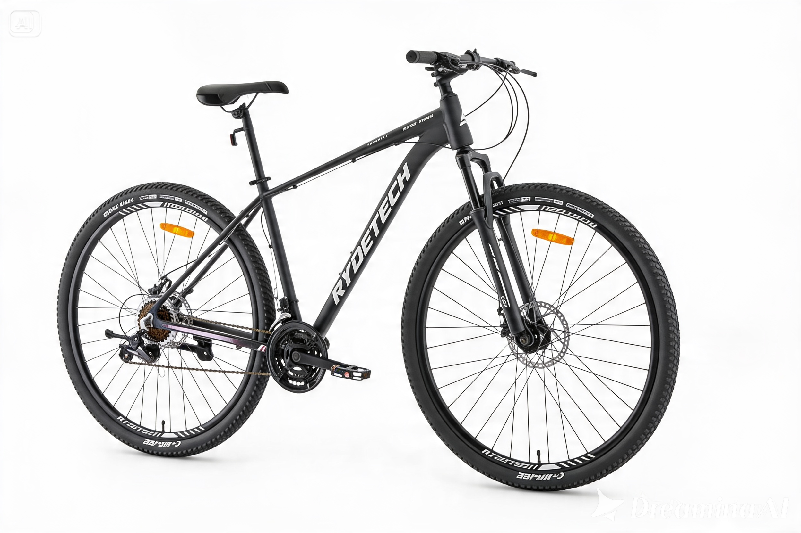

Ridgetech
La Rydetech 700 Pro es una mountain bike pensada para quienes buscan una bicicleta moderna, cómoda y resistente para uso urbano, actividad física y recorridos recreativos. Su cuadro de aluminio y el rodado 29 ofrecen una conducción más liviana, estable y eficiente, mientras que la transmisión Shimano de 21 velocidades permite adaptarse fácilmente a distintos terrenos y ritmos de pedaleo.
- De Contado
- Crédito Personal